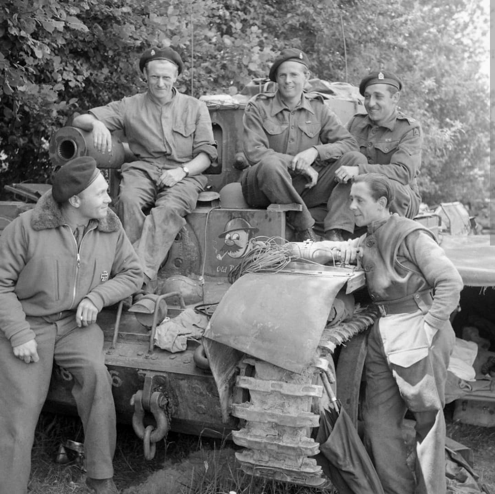
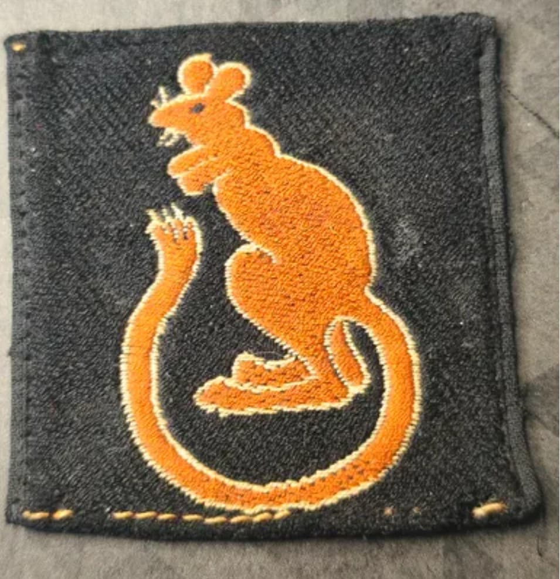
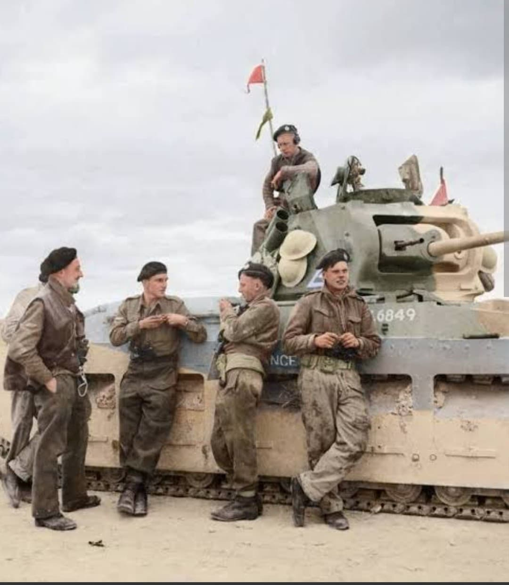

Les célèbres Rats du Désert : des affrontements légendaires contre l'Afrika Korps en Libye au Débarquement et à la route de Berlin

La 7th Armoured Division (7e division blindée britannique), mondialement immortalisée sous le surnom des « Desert Rats » (Les Rats du Désert), est sans conteste l'une des unités blindées les plus prestigieuses, redoutables et mythiques de l'histoire militaire de la Seconde Guerre mondiale.
Fer de lance de l'armée britannique en Afrique du Nord, elle a tenu tête aux redoutables panzers de Rommel avant de participer aux débarquements en Italie et en Normandie, traversant l'Europe de l'Ouest jusqu'au cœur de l'Allemagne.
Formée en Égypte dès 1938 à partir de la Mobile Division, l'unité prend le nom de 7th Armoured Division au début des hostilités. Son insigne distinctif, un gerboise (un petit rongeur du désert) rouge sur fond rectangulaire noir, a été dessiné par la femme du major général **Michael O'Moore Creagh** après qu'elle eut observé l'animal dans le désert libyen.
Porté avec une immense fierté sur les uniformes et peint sur les blindés, il est devenu l'un des emblèmes les plus célèbres du conflit mondial.

Les « Desert Rats » passent trois années dans l'immensité aride du désert occidental. Inférieurs en nombre et souvent en matériel face aux blindés allemands de l'Afrika Korps, ils utilisent leur mobilité légendaire, l'audace tactique et leur expérience pour mener une guérilla blindée acharnée.
Ils s'illustrent lors de la défense de Tobrouk, de la célèbre opération Crusader, et jouent un rôle décisif dans la victoire historique de la seconde bataille d'El Alamein en 1942, avant de participer à la capitulation des forces de l'Axe en Tunisie.

Après avoir combattu en Italie (Sicile et débarquement sur le continent), la division est ramenée en Grande-Bretagne pour se rééquiper en chars Cromwell et se préparer à l'invasion de l'Europe de l'Ouest.
Débarquée en Normandie peu après le D-Day, elle participe aux âpres combats de Villers-Bocage et de la percée normande, puis libère de nombreuses villes en Belgique et aux Pays-Bas. Au printemps 1945, elle franchit le Rhin et participe à l'offensive finale vers Hambourg et Berlin, achevant son extraordinaire parcours en mai 1945.
Page du Musée HOP WW2 – Section Unités & Divisions